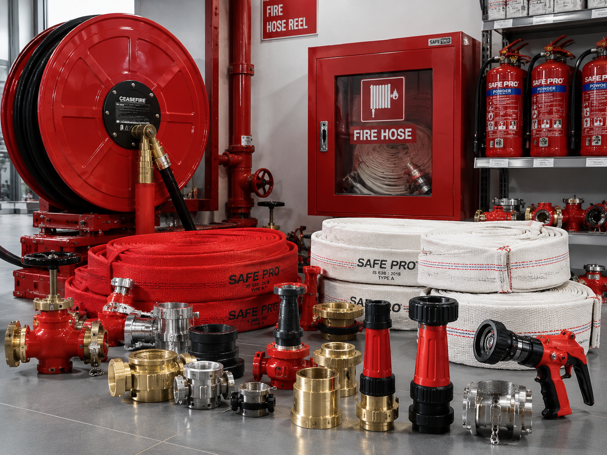

ABOUT US
Protecting What Matters with the Right Fire & Safety Products.
Deep Enterprises is a fire and safety products company based in Jhansi, Uttar Pradesh, serving customers across India.

OUR APPROACH
Built Around Practical Fire Safety Requirements
We provide a broad range of fire fighting equipment, fire safety products and related solutions for varied commercial, industrial, institutional and other requirements.
Our approach is simple: understand the requirement, help identify suitable products, coordinate the supply and keep the buying process straightforward.
OUR VISION
To become a trusted name for fire and safety product supply.
We aim to combine a comprehensive product range, dependable service and a customer-first approach.
OUR MISSION
Make reliable fire & safety products easier to source.
We focus on broad product access, responsive support, transparent communication and efficient supply coordination.
AT A GLANCE
Deep Enterprises at a Glance
BusinessFire Safety Solution & Store
ProprietorDeepak Singh
BaseJhansi, Uttar Pradesh
ReachServing customers across India
FocusFire fighting equipment, fire safety products & related requirements
ModelRequirement → quotation → order coordination → supply
A PRACTICAL PARTNER
Talk to Us →Easy to Understand. Easy to Source.
Share your requirement and let’s work through the right product categories together.